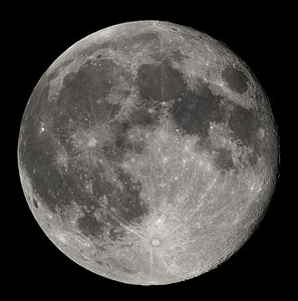
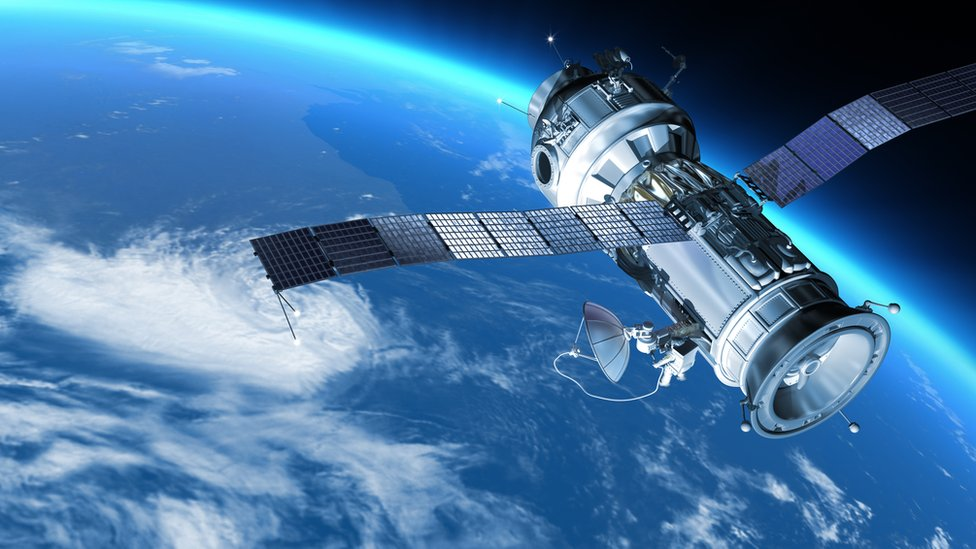
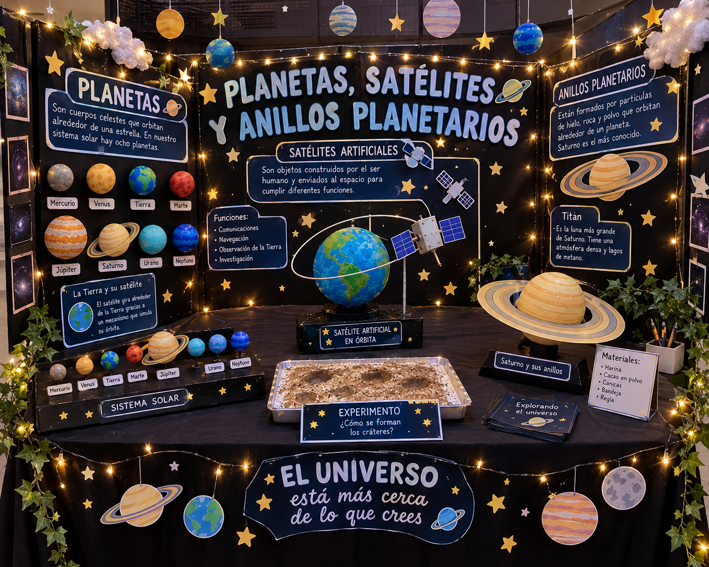

Viaja más allá de las estrellas y descubre el fascinante mundo de los satélites.
Los satélites son objetos que orbitan alrededor de un cuerpo celeste, como un planeta o una estrella. Pueden ser naturales, como la Luna, o artificiales, construidos por el ser humano y enviados al espacio mediante cohetes.
Los satélites artificiales cumplen diferentes funciones: facilitan las comunicaciones, permiten utilizar sistemas de navegación como el GPS, ayudan a estudiar el clima y permiten observar la superficie terrestre y explorar el espacio.
Estudiar los satélites es importante porque forman parte de muchas actividades de nuestra vida cotidiana. Gracias a ellos podemos comunicarnos a grandes distancias, consultar información meteorológica y conocer mejor los cambios que ocurren en nuestro planeta.
Además, los satélites meteorológicos permiten observar la atmósfera y seguir la evolución de fenómenos como tormentas, huracanes y otros eventos que pueden representar riesgos para la población.
Comprender cómo funcionan los satélites, cómo se mantienen en órbita y cuál es su importancia para las comunicaciones, la navegación, la ciencia y el estudio de la Tierra.
Un satélite es un objeto que se mantiene en órbita alrededor de otro cuerpo celeste. Los satélites naturales, como la Luna, existen sin intervención humana. Los satélites artificiales son construidos y lanzados al espacio para realizar tareas específicas.

Los satélites se clasifican en naturales y artificiales. Los artificiales también pueden clasificarse según su órbita, es decir, el recorrido que siguen alrededor de la Tierra.
35.786 km
Altitud aproximada de la órbita geoestacionaria sobre el ecuador terrestre.
Los satélites artificiales pueden contar con antenas, paneles solares, sistemas de comunicación, instrumentos científicos y equipos de control. Cada componente cumple una función necesaria para la misión del satélite.
Los paneles solares convierten la luz del Sol en energía eléctrica. Las antenas permiten enviar y recibir señales, mientras que los sistemas de control ayudan a orientar el satélite y mantener su funcionamiento.

Los satélites permanecen en órbita gracias a la combinación de su velocidad y la fuerza de gravedad. La gravedad los atrae hacia la Tierra, mientras que su movimiento hace que continúen avanzando alrededor del planeta en lugar de caer directamente sobre su superficie.
La velocidad y la altura de la órbita determinan el tiempo que tarda un satélite en completar una vuelta. Por eso, diferentes satélites pueden tener recorridos y velocidades distintos según su función.
En esta simulación puedes observar una representación tridimensional de un planeta rodeado de satélites artificiales que se desplazan por diferentes órbitas. Utiliza el control para cambiar la cantidad de satélites visibles.
Satélites visibles: 10 de 20
Nota: esta simulación es una representación educativa. Los tamaños, las distancias y las velocidades no están representados a escala real.
En nuestro stand, los visitantes podrán conocer qué son los satélites, cuáles son sus funciones y cómo ayudan a la sociedad. También podrán interactuar con la simulación 3D para observar el movimiento de varios satélites alrededor de un planeta.
| El experimento físico muestra | El sitio web muestra |
|---|---|
| Una representación del movimiento orbital. | Una simulación 3D de satélites en movimiento. |
| La explicación del funcionamiento de los satélites. | Información sobre sus funciones y características. |

Los satélites son una herramienta fundamental para la vida moderna, ya que permiten mejorar las comunicaciones, la navegación, el estudio del clima y la investigación espacial. Comprender su funcionamiento nos ayuda a reconocer la importancia de la tecnología y de la exploración del universo.
A través de este proyecto y de la simulación 3D, podemos entender mejor cómo se mueven los satélites alrededor de la Tierra y cómo la ciencia permite desarrollar tecnologías útiles para la sociedad.